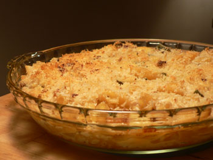

Baked pasta
In an effort to use up my dry, crumbling Keen’s cheddar, I made a small dish of baked pasta last night. I more or less followed the Ruth Reichl recipe, and I used her butter-panko crust. But I added bacon and sage, and I used penne instead of elbows.

I have to say that mom and Dave were right the Microplane is indispensible. I tried grating the Keen’s with my tower grater, and of course it began to fall apart before any shreds of cheese fell from it. Then I grabbed my Microplane, and it was just like mom said, “I was flabbergasted at the ease with which this grater transformed a hard, elderly chunk of parmesan into a fluffy cloud of freshly grated cheese, virtually effortlessly, cheese I was ready to throw away….” Well, it works for cheddar too! I ended up with a small mountain of fluffy grated cheese, easily incorporated into my sauce.
Comments
That sounds delicious; I sort of followed the Ruth Reichl recipe the last time I wanted to make a chicken tetrazzini-type casserole and it worked out really well. I mixed parmesan cheese with the panko in the topping and used spaghetti as the pasta but used her formula for the proportions, adding chunks of roast chicken and sauteed mushrooms.
Mmm, that’s something I haven’t had in a long time, tetrazzini. In fact, I probably haven’t had that since I left home.
I bought a microplane about 6 months ago and hadn’t tried it until last night. The way you both rave about it made me finally try it. What fun! How easy! And what a wonderful fluffy pile of cheese! Can’t wait to use it again.
Add a comment